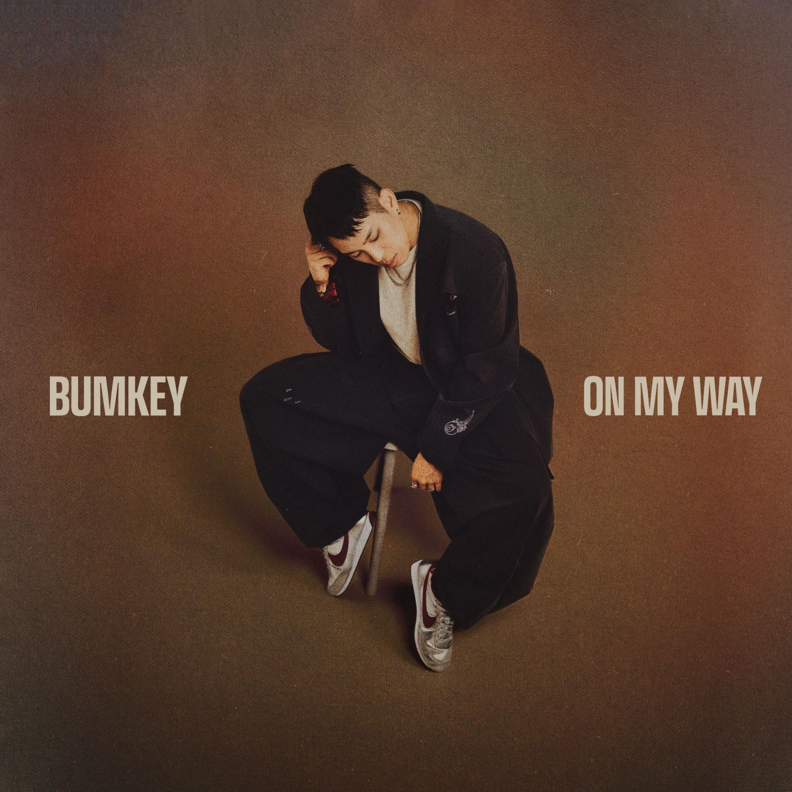
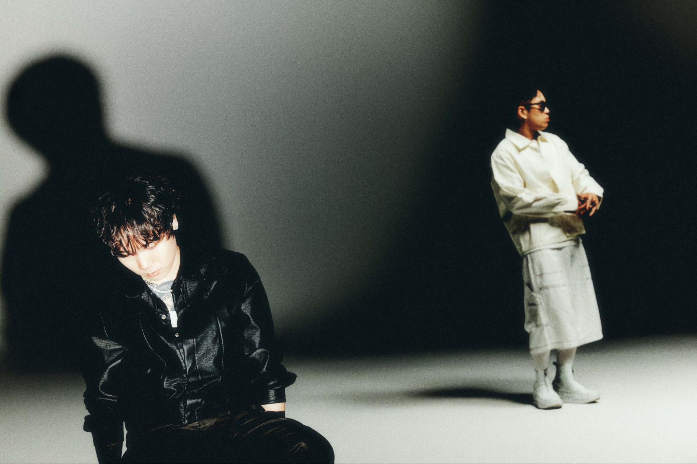
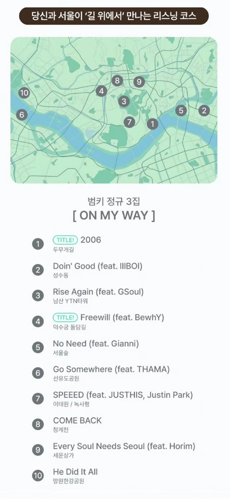

안녕하세요 범키님! HAUS OF MATTERS 인터뷰에 참여해주셔서 감사합니다. 간단한 자기소개 부탁드리겠습니다!
안녕하세요. 21년차 대한민국 R&B 아티스트, 고인물 범키입니다. :)
어느덧 첫 정규앨범 [U-TURN]을 발표한 지도 10년이라는 시간이 흘렀습니다. 1집 당시의 범키와 지금의 범키를 보았을 때, 음악을 만드는 방식이나 삶을 바라보는 태도에서 가장 크게 달라졌다고 느끼는 부분은 무엇인가요?
음악을 만드는 방식 자체는 기술적으로 크게 달라진 것은 없다고 생각합니다. 다만 예전에는 창작을 할 때 내가 어떤 것에서 영감을 받고, 그것이 듣는이에게 어떤 영향을 미치는지에 대해 크게 고민하지 않았던 것 같아요. 저 역시 대중음악을 들으며 영향을 많이 받았던 청소년기를 보냈기 때문에, 이제는 특히 다음 세대에게 좋은 영향과 바른 인식을 줄 수 있는 음악을 만드는 것이 새로운 기준이 되었습니다.
예전에는 흥행을 위해서는 무조건 자극적인 요소가 필요하다고 생각했던 것에서도 조금은 자유로워진 것 같아요. 물론 앨범이 잘되는 것도 중요하지만, 그보다 제 음악을 듣는 사람들이 음악을 통해 조금이라도 행복해졌으면 좋겠다는 마음이 더 커졌습니다.
정규 2집 [The Obedient]에서는 가스펠을 전면에 내세우며 범키님의 신앙을 음악으로 풀어냈습니다. 당시 이러한 작품을 정규앨범으로 만들게 된 계기와 작업 과정에서 가장 중요하게 생각했던 부분은 무엇이었나요?
어떤 아티스트든 그때그때 자신이 느끼고 경험하는 것들이 자연스럽게 창작물로 표현된다고 생각합니다.
우연한 기회에 유튜브에서 찬양을 부를 기회들이 있었는데, 많은 분들이 그 음악들을 앨범으로 내주면 좋겠다고 말씀해주셨어요. 그게 앨범을 만들어야겠다는 하나의 동기가 되었고, 시기적으로도 가스펠 앨범을 내고 싶다는 생각이 있어서 자연스럽게 작업하게 되었습니다.

그로부터 2년 후 공개된 정규 3집 [On My Way]입니다. 어떤 앨범인지 간단하게 소개 부탁드리겠습니다.
1집 [U-TURN]이 제 인생에서 큰 터닝포인트를 겪으며 어찌 보면 막막했던 회심의 순간들을 담아낸 앨범이었다면, 2집 [The Obedient]에서는 '순종'이라는 키워드로 묵묵히 그 길을 걸어가는 삶을 표현했습니다. 이번 [On My Way]에서는 그 길을 걸어오면서 조금씩 안정되고 회복된 현재의 삶과 생각을 담아내고 싶었습니다.
2016년 정규 1집 [U-TURN]은 첫 음악활동 이후 약 11년, 정규 2집 [The Obedient]는 1집으로부터 약 8년이 지나 발표되었습니다. 이에 비하면 [On My Way]는 전작으로부터 2년 만에, 비교적 빠르게 찾아온 작품인데요.
본격적인 작업은 작년 11월부터 시작되었습니다. 작년에 저스디스의 [LIT] 앨범에 수록된 "내가 뭐라고"에 참여하면서 저스디스가 작업하는 과정을 가까이서 보게 됐어요. 전 당시 여러 가지 이유로 앨범 단위의 작업을 계속 미루고 있었는데, 후배 아티스트가 열정을 가지고 작업하는 모습을 보면서 저도 다시 도전해보고 싶다는 생각이 들었던 것 같아요.
처음에는 미니앨범 정도를 만들어보자는 생각으로 시작했는데, 작업하다 보니 곡들이 하나둘 모이면서 결국 정규앨범으로 발매하게 되었네요(웃음).
여러 흔들림과 선택의 시간을 지나 자신만의 길을 걸어온 범키님의 '현재'를 담아낸 앨범이라는 소개가 인상적입니다. 앨범 타이틀 [On My Way]를 비롯해 "Go Somewhere", "SPEEED", "COME BACK" 등 어딘가로 향하고, 떠나고, 돌아오는 이미지가 반복해서 등장하고 있더라고요.
제가 생각했을 때 요즘 사람들의 마음속에는 많은 상처가 있는 것 같다고 느꼈어요. 어느 때보다 풍족한 세상을 살아가고 있지만, 역설적으로 높은 자살률과 이혼율을 기록하고 있고, 많은 사람들이 여러 가지 정신적인 어려움을 안고 살아가고 있잖아요. 온라인에서 사람들이 나누는 이야기를 봐도 부정적인 이슈나 타인을 공격하는 내용, 분노와 시기, 질투가 담긴 이야기들이 많이 보이고요. 오프라인에서도 실제로 사람들의 표정을 보면 많이 지쳐 있다는 생각이 들 때가 있습니다.
그래서 때로는 나 역시 얽혀 있는 이런 것들로부터 조금은 자유로워지고, 평안을 얻으면 좋겠다는 생각을 했습니다. 그런 마음이 자연스럽게 앨범의 여러 키워드와 이야기들로 이어진 것 같아요.
첫 번째 트랙이자 타이틀곡 중 하나인 "2006"은 지금의 아내분과 처음 만난 지 20년이 되는 해를 기념하며 만든 곡입니다. [U-TURN]의 "느껴"에서도 팬과 아내분을 향한 마음을 음악으로 표현하신 바 있는데, 사랑을 처음 시작했던 순간으로 돌아가 노래하는 것은 어떤 경험이었나요?
정말 시간이 빠르네요(웃음). 올해로 아내와 처음 만난 지 20주년이 되었는데, 그때의 범키로 돌아가 풋풋했던 그 시절의 감정 그대로 사랑을 고백해보고 싶었습니다. 실제로 작업하면서도 그때의 감정이 다시 느껴져서 저도 설레는 마음으로 작업했네요.
또 한 명의 가족인 아들 지아니 님 역시 "No Need"에서 함께했습니다. 약 4년 전 "여기저기거기 Pt.2"에서 랩 피처링으로 함께한 이후 한층 성장한 모습을 보여주고 있습니다. 그사이 지아니 군의 음악적인 성장을 어떻게 지켜보셨는지 궁금합니다.
요즘 제 아이가 <마이클>을 본 이후로 마이클 잭슨에 완전히 빠져 있어요. 계속 음악을 찾아 듣기도 하고요. 지난달에는 유튜브에서 마이클 잭슨의 음악을 들은 6억4800만명의 전 세계 리스너들 중 상위 0.75% 안에 들었다는 배지를 받기도 했습니다(웃음). 저와 제 아내 모두 힙합음악과 문화에 자연스럽게 빠져들었는데, 저희 아이가 랩이나 노래, 비트박스 같은 것에 꽂히는 모습을 보니까 '피는 못 속이는구나' 싶은 점이 참 재밌었습니다.
지아니의 목소리를 이번 앨범에 담은 데에는 여러 이유가 있었는데, 먼저 아버지로서 아이가 성장하면서 변화하는 목소리를 하나의 기록으로 남겨두고 싶었어요. 그 다음에는 요즘은 남녀노소 할 것 없이 스마트폰 사용이 너무 일상화되어 있기 때문에 저희 아이도 예외는 아니라고 생각했거든요. 스마트폰은 이제 떼려야 뗄 수 없는 꼭 필요한 도구이기도 하지만, 그만큼 잘 알고 잘 다루는 것이 중요하다고 생각해서 이런 이야기를 음악으로 함께 남겨보고 싶었습니다.
말씀하신 것처럼 "No Need"는 정보와 비교가 넘쳐나는 환경 속에서 점차 흐려지는 자신을 다시 찾아가는 이야기를 담고 있죠.
아이와 함께 노래를 부른다는 것 자체가 하나의 기록이 되었으면 좋겠다는 마음이 컸습니다. 그리고 저 역시 아이를 키우는 입장에서, 지금 세대가 스마트폰과 수많은 정보 속에서 살아가는 모습을 가까이서 보고 있잖아요. 비교할 대상도 너무 많고, 끊임없이 새로운 정보가 들어오는 환경에서 자기 중심을 잃지 않는 것이 중요하다는 생각이 들었습니다. 그런 이야기를 아들과 함께 노래로 남긴다는 것 자체가 의미 있다고 생각했습니다.
또 하나의 타이틀 곡인 "Freewill"에서는 수많은 목소리 사이에서 결국 자신이 따를 방향을 선택하는 '자유의지'를 이야기합니다. 범키님이 생각하는 자유의지란 무엇이며, 이를 [On My Way]의 중요한 주제로 가져오게 된 계기가 궁금하네요.
'자유의지'는 선물과 같은 것이라고 생각합니다. 자유의지가 있기 때문에 우리는 장난감 가게에 있는 인형이나 로봇과 달리 스스로 선택하며 살아갈 수 있다고 생각해요. 그런데 아무리 좋은 선물을 받아도 그 도구를 잘 사용하지 못한다면 축복이 아니라 오히려 재앙이 될 수도 있다고 생각합니다. 태어나서 죽을 때까지 끊임없이 선택하면서 살아가야 하는 인간으로서, 자유의지를 잘 사용해 옳은 선택을 할 수 있으면 좋겠다는 생각을 했습니다.
어떠한 상황을 마주할 때도 늘 부정적인 소리와 긍정적인 소리가 동시에 들려오잖아요. 그 가운데 무엇을 분별해서 들을 것인지가 중요하다고 생각합니다. 저 역시 긍정적인 소리에 조금 더 귀를 기울이려 노력했고, 그런 선택들이 제 삶에서 좋은 결과와 유익으로 이어지는 경험을 많이 했습니다. 여기로부터 시작된 곡이 "Freewill"이에요.
결국 내가 들어야 할 소리를 가까이하고, 듣지 않아도 될 소리를 멀리하는 것이 정신적으로도 굉장히 중요한 것 같습니다.
전작 [The Obedient]에서는 신앙 안에서의 '순종'을 이야기했다면, 이번에는 "Freewill"을 통해 인간에게 주어진 '자유의지'를 이야기한다는 점이 흥미롭습니다. 언뜻 상반되어 보이기도 하는 '순종'과 '자유의지'는 범키님의 삶에서 어떤 관계를 맺고 있나요?
저는 어려서부터 누구보다 자유를 갈망하던 사람이었습니다. 그런데 아주 오랜 시간 자유에 대해 오해하고 살았던 것 같아요.
제가 생각했던 자유는 내 마음대로 모든 것을 결정하고, 하고 싶은 대로 선택하며 사는 것이었습니다. 하지만 지금 생각하는 진정한 자유는 내 마음대로 사는 것이 아니라, 선물처럼 받은 자유의지를 잘 사용해서 하고 싶은 것만 선택하는 것이 아니라 옳은 선택을 하며 살아가는 것이라고 생각합니다. 그래서 저에게 순종과 자유의지는 서로 상반되는 개념이 아니라 오히려 자유의지를 사용해서 올바른 선택을 하는 것이 순종으로 이어지는것이라고 생각합니다.
"Freewill"에는 비와이 님과 함께 선과 악, 선택과 도덕에 관한 이야기를 다루고 있습니다. 이러한 주제를 함께 풀어낼 아티스트로 비와이 님을 선택한 이유와 작업 과정에서 두 분이 나눴던 이야기도 궁금하네요.
곡의 시작 자체가 신앙적인 깨달음에서 비롯되었거든요. 비와이는 우리나라에서 많은 사람들이 알고 있는 크리스천 아티스트이기도 하고, 같은 신념을 공유하고 있다는 믿음이 있었기 때문에 함께 작업을 부탁하게 되었습니다. 사실 이전에도 몇 번 같이 작업하려고 했는데 여러 가지 이유로 성사되지 못했어요. 그런데 이번에는 이 주제에 대해 비와이 역시 자신이 할 이야기가 있을 것 같다고 이야기하면서 흔쾌히 작업에 응해줬고, 그래서 더욱 의미 있는 곡이 나온 것 같습니다.
오랜 시간을 함께 보낸 가족의 이야기가 담긴 "2006"과 삶의 선택과 신념을 다룬 "Freewill"은 상당히 다른 이야기죠. 이 두 곡을 [On My Way]의 더블 타이틀로 선정한 특별한 이유가 있었을까요?
두 곡 모두 저에게 굉장히 의미 있는 주제를 다루고 있는 곡이기 때문이기도 하고, 분위기도 서로 다르기 때문에 이번 앨범에 담겨있는 다양한 모습을 보여드릴 수 있을 것 같았습니다. 조금 더 R&B스러운 곡 한 곡과 힙합스러운 곡 한 곡을 타이틀로 선정하고 싶었고, 그렇게 "2006"과 "Freewill" 두 곡이 더블 타이틀이 되었습니다.

선공개곡이기도 한 "SPEEED"에서는 반복되는 도시의 일상 속에서 자신이 원하는 삶의 방향을 되묻습니다. 특히 저스디스 님의 벌스는 한국 사회를 둘러싼 더 구체적인 사회현상으로까지 이야기가 확장하고 있고요.
비교하고 경쟁하는 분위기 속에서 살아가는 대한민국 사람들을 보면서 안타까운 마음이 있었고, 저를 포함해 우리가 살아가는 사회에 대한 메시지를 음악으로 이야기해보고 싶다는 생각을 어느 정도 가지고 시작했습니다. 확실히 저스디스가 참여하면서 훨씬 더 많은 이야기를 꺼낼 수 있었던 것 같아요. 저스디스도 음악을 듣자마자 최근에 본인이 많이 생각하고 있던 주제라서 금방 가사가 나왔다고 이야기할 정도로 많은 관심을 가졌던 주제인 것 같습니다.
"Every Soul Needs Seoul"은 아직 서울을 경험해보지 못한 해외의 청자들에게 서울의 감성과 매력을 전하는 트랙입니다. 앞선 "SPEEED"에서는 빠르게 흘러가는 도시의 일상에서 벗어나고자 하는 마음을 드러냈지만, 이번 곡에서는 서울을 향한 애정을 보여준다는 대비가 흥미로웠어요.
저는 어떤 것이든 양면성을 가지고 있다고 생각합니다. "SPEEED"에서 이야기한 것은 도시 자체의 문제라기보다는 빠른 발전을 이루어낸 대한민국에서 살아가는 사람들이에요. 치열한 경쟁과 비교 속에서 살아가고, 쉼 없이 더 많이 일하고 더 바쁘게 사는 것이 마치 옳은 것처럼 여겨지는 사회 분위기 속에서 사람들이 느끼는 감정과 그에 따른 부작용에 대해 이야기한 것이죠.
반면 "Every Soul Needs Seoul"에서 이야기하는 서울은 조금 다른 모습입니다. 저는 제가 태어나고 자란 서울이라는 도시를 정말 사랑하고 좋아합니다. 세계 어디를 가더라도 이제는 서울이 가장 살기 좋은 곳 중 하나라고 생각해요. 맛있는 음식도, 멋진 장소도 많고 24시간 잠들지 않는 도시면서 치안도 좋잖아요. 세계 어디서도 쉽게 찾아보기 힘든 대한민국만의 빠른 일처리와 시스템 역시 서울의 매력이라고 생각합니다.
그래서 많은 외국인 분들이 직접 서울에 와서 이런 매력을 경험해봤으면 좋겠다는 마음으로 이 곡을 만들게 되었습니다.
그렇다면 범키님께서 해외의 청자들에게 보여주고 싶은 '서울의 Soul'은 구체적으로 어떠한 것이 있을까요?
서울은 전통과 현대를 동시에 품고 있다는 것이 가장 큰 장점이라고 생각합니다. 오래된 골목이나 전통적인 공간이 있는 동시에 아주 현대적인 건물과 문화가 공존하고 있잖아요. 그런 서울만의 대비와 조화를 직접 경험해보셨으면 좋겠습니다.

티맵과 함께한 프로젝트에서는 [On My Way]의 각 수록곡과 어울리는 서울의 장소를 연결해 소개하고 있다는 점이 재미있었습니다. 이번 이벤트는 어떻게 기획하게 되었나요?
아무래도 앨범명이 [On My Way]이다 보니 '길'이라는 키워드로 어떤 것을 함께할 수 있을까 고민하다가 만들어진 이벤트입니다. 각 음악과 어울리는 장소를 선정하면서 '실제로 이 음악을 이 장소에서 들으면 더 좋지 않을까?'라는 생각으로 장소를 추천하게 되었습니다.
각 곡과 장소를 매칭한 기준과 그 과정도 궁금하네요.
회사 스태프들과 함께 장소를 선정했는데, 내국인 뿐 아니라 외국인들도 많이 방문하는 장소를 중심으로 곡의 분위기와 잘 어울리는 곳들을 골랐어요. 개인적으로는 "2006"에 추천한 한남동 두무개길을 좋아합니다. 저와 아내가 데이트할 때 자주 갔던 드라이브 코스라서 특별한 의미가 있거든요(웃음). 이번에 소개하진 못했지만 분수쇼를 보며 잠수교를 건너는것도 추천드립니다.
마지막 트랙 "He Did It All"은 하나님께 감사의 마음을 전하는 곡이죠. 아카펠라 가스펠로 제작하신 점이 특징입니다.
특별히 마지막 곡에서는 신앙적으로 감사하는 마음을 담은 고백을 하고 싶었습니다. 예전부터 아카펠라 곡을 꼭 만들어보고 싶었는데 이번에 처음 도전하게 되었습니다. 처음이다 보니 아쉬운 부분도 많고 시행착오도 있었지만, 다음에 다시 아카펠라 곡을 만들게 된다면 좀 더 높은 완성도로 작업해보고 싶은 욕심도 있네요.
[On My Way]라는 타이틀이 의미하는 바도 범키님의 신앙이 중요한 방향으로 자리하고 있을까요?
원래부터 신앙을 가지고 살아온 사람은 아니었지만, 뒤늦게 신앙인이 된 후 지금은 제가 받는 영감의 원천 대부분이 신앙적인 깨달음에서 오고 있습니다. 제 인생의 방향성을 새로 설정하고 걷고있는 지금인 만큼, 타이틀 [On My Way]는 이런 저의 마음가짐과 상태를 잘 설명하고 있다고 생각해요. 종교가 없으신 분들에게는 조금 어렵게 느껴지실 수도 있겠지만, 저에게는 굉장히 중요한 부분이기 때문에 앨범의 마지막을 이렇게 맺게 되었네요.
[On My Way] 속 범키님의 스스로 선택하고, 움직이는 주체적인 애티튜드가 눈에 띄는데요. 마지막 트랙에서는 이러한 움직임이 온전히 자신의 힘만으로 이뤄낸 것이 아님을 고백합니다. 범키님에게 있어 자신의 삶을 움직이는 주체적인 원동력, 그리고 하나님의 인도를 따르는 마음은 어떻게 함께 움직일까요?
저는 이 세상에 태어난 모든 사람에게 각자의 재능과 목적이 있다고 믿고 있어요. 어머니 뱃속에서부터 가지고 태어난 기질과 후천적으로 형성된 성격과 성향, 그리고 취향까지도 이유 없이 생겨난 것이 아닌, 세상을 살아가면서 잘 사용해야 할 하나의 도구를 가지게 된 것이라고 생각합니다. 그렇게 발견한 사명이나 재능을 가지고 나 하나 잘 먹고 잘사는 것에 그치지 않고 다른 사람들의 삶에도 유익을 줄 수 있는 사람이 되는 것이 이제 제가 음악을 하는 이유이자 원동력이라고 할 수 있을 것 같아요.
또 상황에 따라 늘 변하는 세상 속 수많은 기준에 갈팡질팡하기보다는 제가 믿는 성경이 가르쳐주는 절대적인 진리를 기준으로 모든 선택을 하려고 합니다. 그렇게 살아가다 보니 오히려 어떤 결정을 내릴 때 조금 더 편안해진 것 같기도 하고요.
이번 앨범의 프로덕션은 어반 R&B부터 시작해 아카펠라까지, 캐주얼하면서도 굉장히 다양한 사운드를 선보였습니다. 사운드를 만들어나감에 있어 가장 중요하게 생각했던 지점이 무엇인지, 나아가 프로듀싱 측면에서 '이 곡의 소리에 집중하면 더욱 재밌을 것 같다!' 생각하는 부분도 있다면 소개 부탁드리겠습니다.
국내 음악이든 해외 음악이든 요즘 정말 좋은 음악들이 너무 많습니다. 특히 국내에도 정말 멋진 R&B 아티스트들이 많이 있고요. 그런 음악을 듣다 보면 '나도 저런 걸 해보고 싶다'는 욕심이 생기거든요. 그런데 이번 앨범에서는 단순히 듣기에 좋고, 내가 해보고 싶고, 또 할 수 있다고 해서 무작정 담기보다는 정말 저만 할 수 있는, 딱 맞는 옷같은 R&B 음악을 만들어보고 싶었습니다. 특히 저에게 향수를 불러일으키는 가장 좋아했던 음악들을 조금 고집스럽게 만들어서 담아보고 싶었어요. 몇몇 곡은 어찌 보면 '조금 올드하다'고 느끼실 수도 있겠지만, 그럼에도 불구하고 제가 생각하기에 정말 오리지널리티 있는 음악을 만들어보고 싶었습니다. 적어도 한국에서 이런 스타일의 R&B는 '범키가 정말 잘하는구나'라는 평가를 듣고 싶었습니다.
저는 늘 한 앨범 안에 다양한 장르의 음악을 담는 것을 좋아합니다. 앨범을 처음부터 끝까지 들으셨을 때 '지루하지 않다'고 느끼신다면 개인적으로 정말 기쁠 것 같습니다.
최근 "갖고놀래"를 비롯한 예전 범키님의 음악이 다시 주목받으며 새로운 세대의 청자들에게 재발견되고 있습니다. 예전에 만들었던 음악이 지금의 젊은 청자들에게 새롭게 소비되는 모습을 당사자로서 어떻게 바라보고 계신가요?
음악 시장이 정말 많이 변해서 놀랍다고 생각합니다. 릴스나 쇼츠를 통해 음악을 접하고, 알고리즘의 추천을 통해 음악을 듣다 보니 이제는 이 음악이 얼마나 오래된 음악인지, 새로 나온 음악인지에 대한 정보 자체가 크게 중요하지 않은 것 같아요. 한편으로는 '꼭 신곡으로 승부를 봐야 한다'는 강박에서 조금 벗어날 수 있게 된 것 같아서 긍정적으로 생각하는 부분도 있습니다.
시대와 상관없이 다양한 음악을 접할 수 있게 된 만큼, 오히려 앨범을 꾸준히 발매하는 것 자체가 경쟁력이 될 수도 있겠다는 생각이 들었습니다. 그래서 앞으로도 부지런히 작업물을 공개할 예정입니다.
예전과 비교하면 국내 R&B의 사운드는 물론, 아티스트와 청자가 음악을 만들고 소비하는 환경 역시 크게 달라졌습니다. 오랜 시간 이러한 변화를 직접 경험해온 뮤지션으로서 현재의 한국 R&B 씬을 어떻게 바라보고 계신지도 궁금합니다. 그 안에서 범키님이 여전히 지키고자 하는 자신만의 음악적 기준이 있다면 무엇인가요?
안타깝게도 아직까지 한국에 'R&B 씬이 정확하게 존재한다'고 말하기는 조금 어렵지 않나 생각합니다. 그럼에도 불구하고 정말 좋은 음악을 태어나면서부터 듣고 자란 젊은 아티스트들이 계속 나오고 있기 때문에, 서로 많이 협업하고 도와가면서 활동하다 보면 또 새로운 움직임을 만들어낼 수 있지 않을까 생각합니다. 제가 지켜나가고 싶은 것은 R&B 아티스트로서 가지고 있는 정체성을 잃지 않고, 꾸준히 제가 좋아하는 음악을 만들어내는 것입니다. R&B 음악이 가진 큰 장점 중 하나가 시대를 크게 타지 않는다는 점이라고 생각합니다. 좋은 음악을 꾸준히 만들어서 발매하다 보면 언젠가는 또 좋은 반응을 얻는 곡이 나오지 않을까요?
이번 앨범을 완성한 지금, 범키님은 자신의 음악적 여정에서 어느 지점을 지나고 있다고 생각하시나요? 앞으로 향하고 싶은 곳과 계획하고 있는 활동에 관해서도 이야기 부탁드리겠습니다.
저는 개인적으로 아직도 갈 길이 멀다고 생각합니다. 여기저기서 말씀드린 적도 있지만, 지금 당장 사람들에게 어떻게 평가받기보다는 앞으로 더 오랜 시간 묵묵히 걸어가고 싶습니다. 그리고 10년, 20년이 더 지난 뒤에 오히려 재평가받는 아티스트가 되고 싶어요. '범키는 정말 50살이 되어도, 60살이 되어도 멋진 음악을 하는 R&B 아티스트구나'라는 평가를 받을 수 있다면 정말 좋을 것 같습니다.
인터뷰가 마무리되었습니다! 마지막으로 팬분들과 HAUS OF MATTERS 독자분들께 하고 싶은 말씀 부탁드리겠습니다!
오늘 이렇게 이야기할 수 있는 장을 마련해주셔서 정말 감사드립니다. HAUS OF MATTERS와 인터뷰할 수 있어서 영광이었고, 앞으로도 제 음악 많이 관심 가져주세요. [ON MY WAY]앨범 많이 들어주시면 감사하겠습니다!
감사합니다!
인터뷰에 함께해주신 범키님께 다시 한 번 감사드립니다!